文字
背景
行間


SSH活動掲示板
SSH活動報告
クリスマスレクチャー「有機化学実験講座」
平成３０年１２月２２日（土）、２３日（日）の２日間、東邦大学理学部においてクリスマスレクチャー「有機化学実験講座」が開催されました。２年生４名、１年生１０名の計１４名（普通科５名、理数科９名）が参加しました。
講座内容は、解熱鎮痛剤として使用されているアスピリン（アセチルサリチル酸）をサリチル酸から合成・精製し、合成したものがアスピリンであるかを融点測定や塩化鉄(Ⅲ)溶液による定性試験、三種類の機器分析（MS・IR・NMR）により同定しました。また、コンピュータ上での分子モデリングを行いました。大学の先生やＴＡの学生さんのサポートを受けながら、一人ですべての工程を行い、全員無事にアスピリンを合成できたことを確認することができました。
講座内容は、解熱鎮痛剤として使用されているアスピリン（アセチルサリチル酸）をサリチル酸から合成・精製し、合成したものがアスピリンであるかを融点測定や塩化鉄(Ⅲ)溶液による定性試験、三種類の機器分析（MS・IR・NMR）により同定しました。また、コンピュータ上での分子モデリングを行いました。大学の先生やＴＡの学生さんのサポートを受けながら、一人ですべての工程を行い、全員無事にアスピリンを合成できたことを確認することができました。
 |  |  |
| 講義 | 合成実験 | 合成実験 |
 |  |  |
| データ分析 | NMR実習 | データ分析 |
| 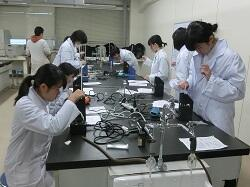 |  |  |
| 融点測定 | IR実習 | 分子モデリング実習 |
サイエンス・ダイアログを実施しました
平成３０年１２月１１日（火）６・７限 理数科１・２年生が「サイエンス・ダイアログ プログラム」を利用して、日本の研究機関で活躍されている外国人研究者の方から「ｍＲＮＡによる脊髄損傷治療について」という内容で講義を受けました。
最先端の研究内容を英語で話していただいたため、内容を理解するのに非常に苦労しましたが、研究への熱意に触れることができました。もっと英語を勉強して理解できるようになりたいと感じた人も多かったようです。
「サイエンス・ダイアログ」とは、（独）日本学術振興会（ＪＳＰＳ）のフェローシップ制度により、日本の大学・研究機関等に滞在している優秀な若手外国人研究者（JSPSフェロー）を、講師として高等学校等に派遣していただくもので、講師の方の研究や出身国に関する講義が英語で実施されます。研究内容や経歴について英語で聞くという経験を通じて、研究への関心や国際理解を深めることを目的として行われています。
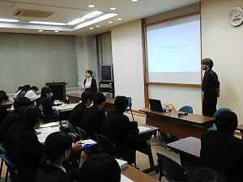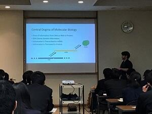
最先端の研究内容を英語で話していただいたため、内容を理解するのに非常に苦労しましたが、研究への熱意に触れることができました。もっと英語を勉強して理解できるようになりたいと感じた人も多かったようです。
「サイエンス・ダイアログ」とは、（独）日本学術振興会（ＪＳＰＳ）のフェローシップ制度により、日本の大学・研究機関等に滞在している優秀な若手外国人研究者（JSPSフェロー）を、講師として高等学校等に派遣していただくもので、講師の方の研究や出身国に関する講義が英語で実施されます。研究内容や経歴について英語で聞くという経験を通じて、研究への関心や国際理解を深めることを目的として行われています。
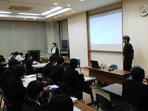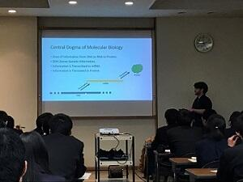
第７回千葉県高校生科学研究発表会に参加してきました
投稿日時 : 2018/11/27
 sakura-h
sakura-h
１１月２４日（土）千葉大学で行われた千葉県高校生科学研究発表会に３チーム（６名）が参加してきました。今回の発表会は口頭発表でした。初めての口頭発表でしたが、それぞれ意見やアドバイスをいただき、今後の研究に意欲を燃やしていました。
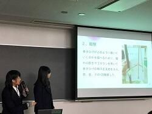

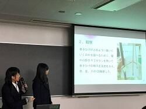
科学の甲子園千葉県大会に出場しました。
投稿日時 : 2018/11/19
sakura-h
11月17日（土）千葉県総合教育センターにて開催された科学の甲子園千葉県大会に、天文気象部チーム（1・2年生）と、1年理数科（ほぼ生物部）チームが参戦しました。1年生にとっては未履修の単元や科目が多いのに加え、過去問はどれも難しく準備には苦労しました。1年理数科チームは放課後に生物室で学習会を開き、2・3年で学習する教科書の読破と筆記競技・実技競技の練習を連日積み重ねて臨みました。さてその結果は……？（結果発表は後日です。）
理数好きが一堂に会する本大会の参加者たちは、必ずやどこかで再会する仲間のはずです。この大会は生徒たちにとって人生における歴史的な出会いの場となったのではないでしょうか。


左 Ａチーム（天文気象部チーム） 右Ｂチーム（１年Ｈ組チーム）
理数好きが一堂に会する本大会の参加者たちは、必ずやどこかで再会する仲間のはずです。この大会は生徒たちにとって人生における歴史的な出会いの場となったのではないでしょうか。
左 Ａチーム（天文気象部チーム） 右Ｂチーム（１年Ｈ組チーム）
サイエンスツアー
投稿日時 : 2018/11/05
sakura-h
理数科１年生対象の１０月に実施された国内サイエンスツアーは、初日は台風の影響で予定より集合時間を遅らせましたが、無事に研修場所である県立内浦山県民の森の宿泊施設に午後３時に到着しました。送迎等御協力くださった保護者の皆様、感謝いたします。
初日１０月１日（月）の昼は、森林調査実習として、コドラ―トと呼ばれる植生調査を行い7m×7mの範囲に含まれる樹木の位置、高さ、太さ、種類、側面図等を記録しました。その後、森林調査のまとめを行い、夜には２日目に行う地学実習に向けた授業を受け、地層の傾斜等を調べる時に用いるクリノメーターの使い方を学びました。
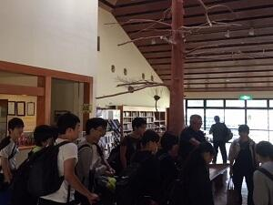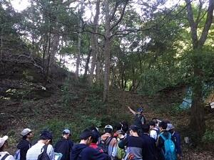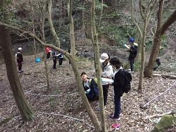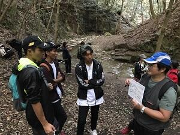

１０月２日（火）SSH国内サイエンスツアー２日目は、地学実習で露頭部分の地層を観察、クリノメーターを用いた地層面の傾斜角測定などを行いました。また、清澄寺では、天然記念物の清澄の大杉の樹高を班ごとに工夫しながら計測する実習も行いました。植物の葉を採取しながら、宿舎では葉などの情報から、図鑑を見ないで行う植物同定の実習も行いました。クスノキ科やブナ科等の主要な植物や、紛らわしい植物約20種類の見分け方を学び、植物を自分で同定できる喜びを教えてもらいました。教室では体験できない多くの実習を経験できています。
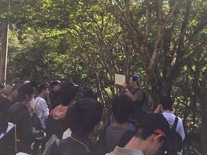


 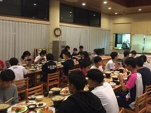
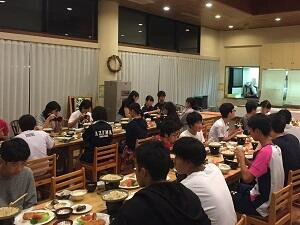
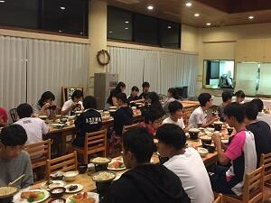１０月３日（水）国内サイエンスツアーの最終日です。本日の活動は、千葉大学海洋バイオシステム研究センターを見学した後、海岸で海洋生物の観察実習がありました。海岸での観察実習では、貝や魚、蟹の名前や、貝が危険を察知した際の行動、貝紫というアクキガイ科の巻貝の内臓を紫外線に当てた際の紫色の発色、を教わり、実際に紫になるのか実験をしました。また、地層の観察も行い、嵐があった後など、地層から何が分かるかを教えてもらいました。実習終了後、予定通りの電車に乗車し解散しました。２泊３日の国内サイエンスツアーは無事終了しました。
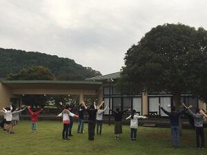

 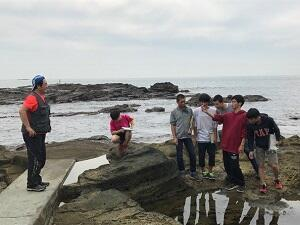
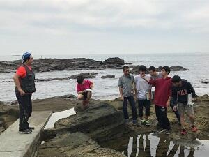
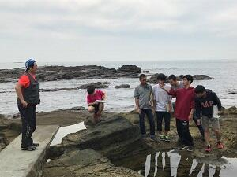佐倉サイエンス【地学】
投稿日時 : 2018/10/31
sakura-h
今日の「佐倉サイエンス」では先週お休みだった地学「有孔虫を観察しよう」が行われました。
0.063mmのふるいで泥を水洗し，過酸化水素水等で処理をしたサンプルから分離された有孔虫の種を図鑑で同定し，その生息環境から，地層堆積当時の環境を推定しました。


0.063mmのふるいで泥を水洗し，過酸化水素水等で処理をしたサンプルから分離された有孔虫の種を図鑑で同定し，その生息環境から，地層堆積当時の環境を推定しました。
佐倉サイエンス
今日の「佐倉サイエンス」は物理が「運動と力」，化学が「墨流しで分子をとらえる」，生物が「標本の採集と整理」，数学が「ゾムツール」の実習をそれぞれ行いました。
学校設定科目「佐倉サイエンス」は物理・化学・生物・地学・数学の基本的な実習を行う理数科１年生の科目です。（今回地学はお休み）
【化学】
【生物】


【物理】


【数学】
学校設定科目「佐倉サイエンス」は物理・化学・生物・地学・数学の基本的な実習を行う理数科１年生の科目です。（今回地学はお休み）
【化学】
測定したステアリン酸の単分子膜の面積と１分子の断面積のデータより，滴下したステアリン酸の分子数を求め，滴下したステアリン酸の質量から１モルの粒子数（アボガドロ定数：NA）を求めました。また墨流しを体験し，カラフルなマーブル模様を紙に写しとりました。なお，今回はガラス細工でスポイトも自作です。
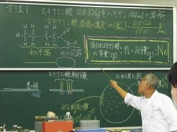
【生物】
採集（記録の仕方）・標本作成法（乾燥標本や浸液標本の作製方法）の講義後，採集したナメクジの歯舌を取りだし顕微鏡で観察をしました。
【物理】
作ったペットボトルロケットを打ち上げて，得られた「打上角度・噴射水量・空気圧・飛行距離」の各データを解析し，最も遠くに飛ばす「打上角度・噴射水量と空気圧との関係」を探りました。
【数学】
ゾムツールで簡単な多面体をつくりました。この実習は11/17（土）と11/24（土）で実施予定のSSH講座「多面体の数学的性質とゾムツールを用いた多面体作成実習」では発展した内容になります。現在参加希望者募集中です。
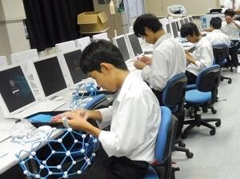
SSHポスターセッション
投稿日時 : 2018/10/11
sakura-h
平成３０年１０月９日（火）７限に、理数科２年生が１年生全員に向けて、SS課題研究Ⅰで取り組んでいる研究テーマについてポスター発表を行いました。１年生は、複数の発表からポスター発表の方法について学習しました。
各グループの発表要旨は、こちら からPDFでご覧いただけます。
 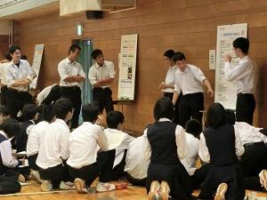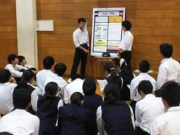
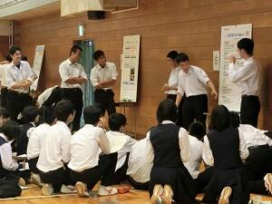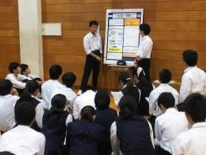
高校生理科研究発表会（今年度９月）で優秀賞を受賞した二班のポスター


第12回 高校生理科研究発表会
投稿日時 : 2018/10/02
sakura-h
理数科２年生全員が、SS課題研究Ⅰの中間発表的な位置づけで９月２９日（土）に千葉大学で開催された発表会に参加してきました。
年度当初に希望した物理分野８、化学分野２、生物分野６、地学分野１、数学分野１の計１８テーマに分かれ、夏休みや休日を返上して実験・観察を繰り返し、初めてポスターを作成し校外での発表会に臨みました。「たくさんアドバイスをもらえて良かった」という発言が多く聞かれ、今後の研究への意欲を燃やしていました。また、物理分野の「泥はね軽減靴底の開発」、化学分野の「働く糖分～藍染めの新還元剤発見！？～」の２つの発表が優秀賞を受賞して表彰されました。


 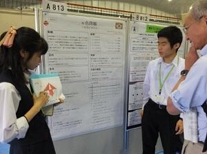
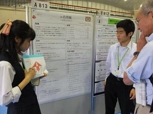 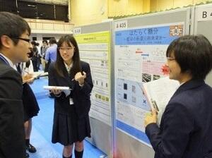
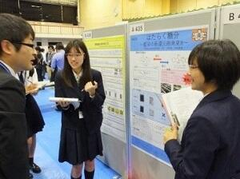
年度当初に希望した物理分野８、化学分野２、生物分野６、地学分野１、数学分野１の計１８テーマに分かれ、夏休みや休日を返上して実験・観察を繰り返し、初めてポスターを作成し校外での発表会に臨みました。「たくさんアドバイスをもらえて良かった」という発言が多く聞かれ、今後の研究への意欲を燃やしていました。また、物理分野の「泥はね軽減靴底の開発」、化学分野の「働く糖分～藍染めの新還元剤発見！？～」の２つの発表が優秀賞を受賞して表彰されました。
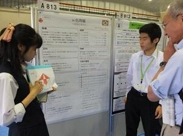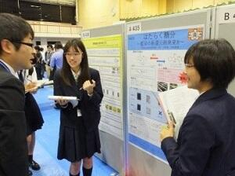 SS課題研究Ⅱ口頭発表会
平成３０年９月１１日(火)午後から本校地域交流施設にて、「SS課題研究Ⅱ口頭発表会」が行われました。理数科行事として、３年生が昨年度からの自らの研究の成果を理数科1・2年生や職員の前で、それぞれスライドにまとめて発表しました。数学部門１、物理部門６、化学部門６、生物部門５の1８グループが、発表時間５分、質疑応答３分の短い時間の中で説明しました。研究成果を５分でわかりやすく説明するために、それぞれ、いろいろと工夫して発表していました。発表後は、後輩達との活発な質疑応答がなされました。


 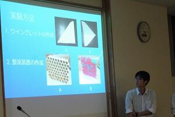
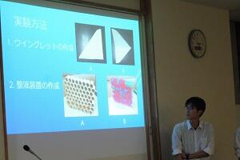
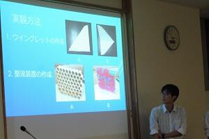 平成30年度 SSH生徒研究発表会
投稿日時 : 2018/08/22
sakura-h
8月7～9日の3日間、神戸国際展示場でSSH生徒研究発表会が開かれました。現在SSH校に指定されている学校及び海外招聘校約230校が一堂に会し、ポスター発表や代表校による口頭発表を行いました。
本校からは理数科3年の石田 薫君、三枝 晴仁君の2名が「硝酸銅なのに緑？」というテーマで発表しました。化学の先生方も勘違いしている事柄について丁寧に考察したので、高校生よりも先生方がたくさんブースを訪れていたのが印象的でした。
また、今年1月に海外研修で訪れたシンガポールのHwa Chong Institutionも招聘されており、旧交を温めることが出来たのも良かったです。
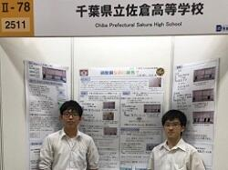

本校からは理数科3年の石田 薫君、三枝 晴仁君の2名が「硝酸銅なのに緑？」というテーマで発表しました。化学の先生方も勘違いしている事柄について丁寧に考察したので、高校生よりも先生方がたくさんブースを訪れていたのが印象的でした。
また、今年1月に海外研修で訪れたシンガポールのHwa Chong Institutionも招聘されており、旧交を温めることが出来たのも良かったです。
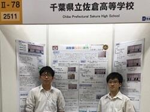
第８回サイエンススクールフェスティバル
投稿日時 : 2018/07/31
sakura-h
７月２９日（日）千葉工業大学で第８回サイエンススクールフェスティバルに化学部、生物部、電気部の生徒１７名が参加しました。
生徒たちは、小中学生に向けて理科に関する体験ができるブースの運営を行いました。
別の生徒たちは、交流・相談ブースでは、消化酵素を使った夏休みの自由研究についてのアドバイスをしていました。
午後は、当日初めて交流した他校の生徒と、モールを使って２０ｃｍ以上の高さにできるだけ多くのピンポン玉を乗せる競技に参加しました。
生徒たちは、小中学生に向けて理科に関する体験ができるブースの運営を行いました。
| 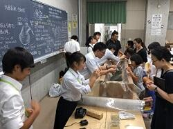 |  | |
| 生物部「しじみ釣りと、しじみの秘密」 | ||
| 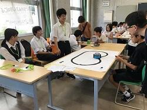 | 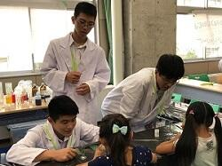 | |
| 電気部「レゴロボットで遊ぼう」 | 化学部「スライムをつくってみよう」 | |
別の生徒たちは、交流・相談ブースでは、消化酵素を使った夏休みの自由研究についてのアドバイスをしていました。
午後は、当日初めて交流した他校の生徒と、モールを使って２０ｃｍ以上の高さにできるだけ多くのピンポン玉を乗せる競技に参加しました。
 |  |
SSH講座「植物の成分を精製してみよう！」
平成３０年７月１０日（火）の午後、佐倉市の株式会社常磐植物化学研究所において「植物の成分を精製してみよう！」および「植物の色を見てみよう！」をテーマにSSH講座が開催されました。１年生２０名、２年生２名の計２２名が参加し、実験実習、施設見学、ハーブ園研修を行いました。
実験実習では、甘草エキスからその主成分であるグリチルリチン酸の分離に加え、ブルーベーリーやクチナシの花びらから取り出した色の成分が液性によりどのように変化するのかも体験しました。
施設見学では、原料から製品となるまでの一連の流れや研究室での製品チェックの様子などを、わかりやすく説明していただきました。
ハーブ園では、ブルーベリー、クレソン、カレープラント、ライスイヤ、ステビア、サンショ、マロウ、クチナシ、ニッコウキスゲなどについて触れたり、においを確認したり、味をみたりしながら研修しました。最後に暑さを和らげるような冷たい特性ハーブティーも試飲しました。
午後の４時間ほどの講座でしたが、とても充実した講座になりました。
 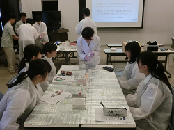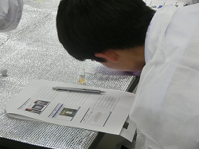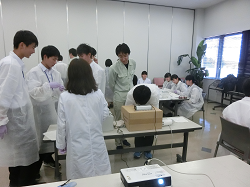
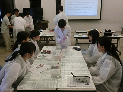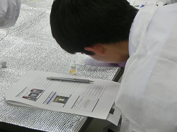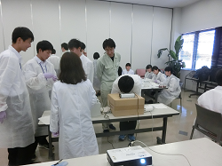 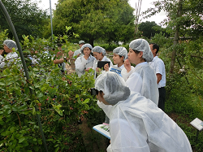
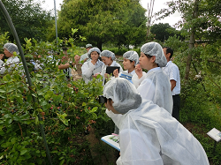 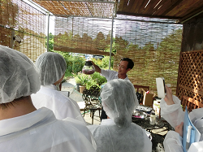
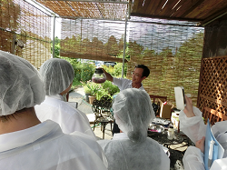
実験実習では、甘草エキスからその主成分であるグリチルリチン酸の分離に加え、ブルーベーリーやクチナシの花びらから取り出した色の成分が液性によりどのように変化するのかも体験しました。
施設見学では、原料から製品となるまでの一連の流れや研究室での製品チェックの様子などを、わかりやすく説明していただきました。
ハーブ園では、ブルーベリー、クレソン、カレープラント、ライスイヤ、ステビア、サンショ、マロウ、クチナシ、ニッコウキスゲなどについて触れたり、においを確認したり、味をみたりしながら研修しました。最後に暑さを和らげるような冷たい特性ハーブティーも試飲しました。
午後の４時間ほどの講座でしたが、とても充実した講座になりました。
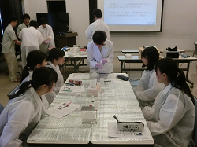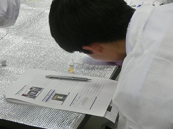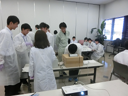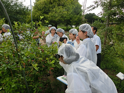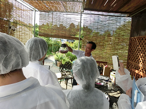 ＳＳＨ講座「チバニアンって何だろう？」を開催しました
7月17日（火）午後，本校地域交流施設にて，現在登録申請中のチバニアン研究の第一人者，茨城大学理学部地球環境科学領域教授の岡田 誠先生をお招きしてＳＳＨ講座が開催されました。
集まった生徒は理数科・普通科を問わず100人あまり。まず，まだ地学を履修していない１年生向けに，３年生地学履修者からの研究発表が60分間行われ，チバニアンについての解説が笑いを交えて楽しく行われました。実はこのとき，大御所の岡田先生が後方でご覧になっており，３年生諸君はそれに気付いた瞬間さぞかし緊張のどん底を味わったことでしょう（笑）。そしてついに岡田 誠先生のご登場です。
講義は地質学の基礎から今をときめく「チバニアン」の最新事情まで，たいへん楽しい内容でした。科学大好き生徒たちは，軽妙に語られる地質学の魅力に惹き付けられ意気盛ん。例えば酸素同位体比率が語る水環境変動のお話はたいへん分かりやすく，なるほどそういうことか！と腑に落ちましたし，気候変動には短期的・長期的な視点があること，宇宙放射線と地磁気変動との関係，そしてチバニアンとはそもそも何なのかなど，新しいことを知るわくわくした楽しみを分かち合えた120分間でした。
講義後も白熱した質疑応答が30分以上続き，講義をよく聴いていないとわからない細かな質問が生徒たちから矢継ぎ早に飛び出しました。岡田先生はそれらにひとつひとつ丁寧にお答えくださり，そのお人柄と相俟って，科学の道を志す生徒たちの心に確かな火を灯してくださいました。
今後も，チバニアンの登録が叶いゴールデンスパイクが打ち込まれるその日まで，佐高生一同注目していきたいと思います。岡田 誠先生，有り難うございました。
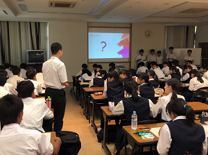


集まった生徒は理数科・普通科を問わず100人あまり。まず，まだ地学を履修していない１年生向けに，３年生地学履修者からの研究発表が60分間行われ，チバニアンについての解説が笑いを交えて楽しく行われました。実はこのとき，大御所の岡田先生が後方でご覧になっており，３年生諸君はそれに気付いた瞬間さぞかし緊張のどん底を味わったことでしょう（笑）。そしてついに岡田 誠先生のご登場です。
講義は地質学の基礎から今をときめく「チバニアン」の最新事情まで，たいへん楽しい内容でした。科学大好き生徒たちは，軽妙に語られる地質学の魅力に惹き付けられ意気盛ん。例えば酸素同位体比率が語る水環境変動のお話はたいへん分かりやすく，なるほどそういうことか！と腑に落ちましたし，気候変動には短期的・長期的な視点があること，宇宙放射線と地磁気変動との関係，そしてチバニアンとはそもそも何なのかなど，新しいことを知るわくわくした楽しみを分かち合えた120分間でした。
講義後も白熱した質疑応答が30分以上続き，講義をよく聴いていないとわからない細かな質問が生徒たちから矢継ぎ早に飛び出しました。岡田先生はそれらにひとつひとつ丁寧にお答えくださり，そのお人柄と相俟って，科学の道を志す生徒たちの心に確かな火を灯してくださいました。
今後も，チバニアンの登録が叶いゴールデンスパイクが打ち込まれるその日まで，佐高生一同注目していきたいと思います。岡田 誠先生，有り難うございました。
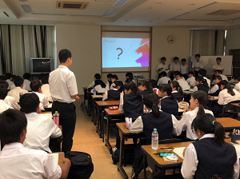
SSH講座「加速器で迫る世界」
7月11日（水）、SSH講座「加速器で迫る世界」として、本校物理実験室にて高エネルギー加速器研究機構(KEK)の宍戸寿郎氏に、宇宙や物質の始まり、KEKの研究施設や研究内容について講義をしていただきました。実際に研究で使われている装置の一部や、最新の研究内容に触れることで、生徒たちの興味や探究心を引き出す良い機会になりました。次回8月23日は、実際につくば市にある研究施設に足を運び、見学する予定です。
 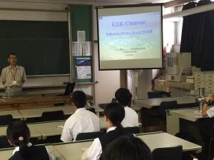
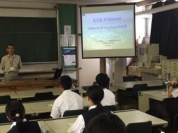
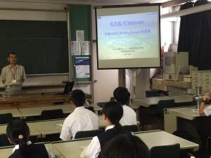 第9回千葉県高等学校課題研究発表会に参加してきました
投稿日時 : 2018/03/20
sakura-h
3月17日（土）、千葉工業大学を会場にして行われた千葉県高等学校課題研究発表会に理数科生徒が参加してきました。この発表会は、研究推進のヒントを得るために行われ県内各地から計197件の発表がありました。本校は2年生が全員発表、1年生は見学でした。
午前中、各科目に分かれ各校の代表が口頭発表を、午後はポスター発表を行ないました。たくさんの助言者からいろいろな意見やアドバイスを頂き、今後の研究への参考に、また1年生は自分達が始める研究のヒントを掴んだようです。
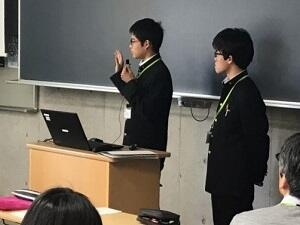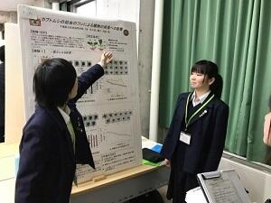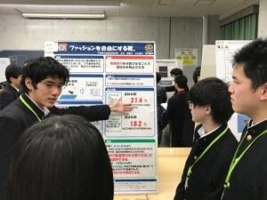

海外研修 終了しました。
投稿日時 : 2018/01/22
sakura-h
最終日は、JSTシンガポール事務所所長 佐藤正樹氏からシンガポールが教育や研究に力を入れる理由や今後の方向性について伺いました。その後、シンガポール国立大学で、害鳥であるカラスを排除する為のドローンの研究をされている末田航先生からお話を伺いました。特に末田先生は美術大学からベンチャー企業を経て、研究の道に入られたので、生徒達はその生き様から感じることが多かったようです。
午後はGardens by the Bay を訪れ、小グループに分かれガイドに説明して貰いました。やっと英語に慣れてきたので積極的に質問していた様子が見受けられました。その後、China Town で自由時間を取った後、ナイトサファリに向かいました。深夜便でチャンギ空港から出国し、20日朝 成田空港に帰国しました。
生徒にとっては、課題研究で夜遅くまで実験を行ったり、ポスターを製作したりした苦労が報われた、刺激的で充実した5日間だったと思います。ここで得た事を今後の生活に是非活かして欲しいと考えます。

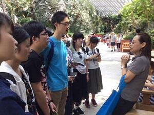

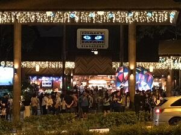

2年理数科 海外研修 学校交流を行いました。
投稿日時 : 2018/01/19
sakura-h
海外研修の目的のメインである課題研究の発表をする現地の学校との交流を行いました。訪問先である Hwa Chong Institution は、 INTEL ISEF2017 や化学グランドコンテストにシンガポール代表を毎年のように送り出している優秀な学校です。
毎日朝７時半から生徒全員が集合し、国旗掲揚が行われます。午前中は敷地内見学や数名ずつに分かれ数学、化学、地理などの授業を体験しました。また、生徒会選挙の立会演説会にも参加させて頂き、日本のそれとの大きな違いを感じたようです。
午後は両校の課題研究をポスタープレゼンテーションし合いました。はじめの頃はやや緊張気味でしたが、慣れてくると打ち解け合い仲良く意見交換出来ました。


SSH海外研修事前指導 終了しました
海外研修でのポスター発表の練習に、千葉大学在籍の留学生や海外研修体験者をお招きし、プレゼン練習を年末から繰り返してきました。
１月１２日に行われた第４回をもって終了し、いよいよ本番を迎えるばかりとなりました。今までの成果を十分発揮してきて欲しいものです。

 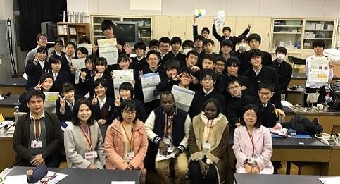
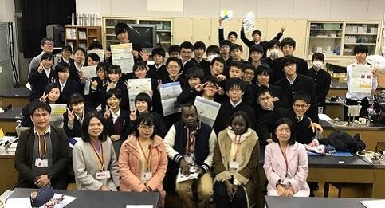生活の中で利用されている化学と企業の開発の取り組み
平成２９年１２月１４日、本校に（株）DICから髙橋雅人様始め４名の研究者の方々をお招きしました。研究者の方々は、DICが行っている研究活動の一端を紹介しつつ、大学で行われている研究活動との目的や方向性の違いなどについて説明してくださいました。また、普段の生活や研究者を歩もうと思ったきっかけなどについても話してくださいました。進路選択を考え始めた生徒にとって、とてもタイミングの良い内容でした。
実験実習は、藻であるスピルリナからいろいろな溶媒を用いて色素を取り出す実験（そのうちの一つはガリガリ君の青色色素であるフィコシアニンでした）。もう一つは粘性を定量する簡易装置を用いて、ハチミツとマヨネーズの粘性の違いについて実習しました。操作を済ませたら終わりでなく自分達の実験結果から考察を発表するミニ研究体験でした。
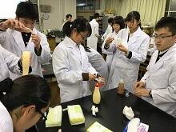